<!DOCTYPE html>
<html lang="ja">
  <head>
    <meta charset="utf-8">
    <meta name="viewport" content="width=device-width, initial-scale=1">
    <title>kanji nakahashi portfolio</title>
    <meta name="robots" content="noindex, nofollow">
    <meta name="keywords" content="kanji, nakahashi, portfolio">
    <meta name="description" content="中橋寛治のportfolioです。">
    <link href="https://fonts.googleapis.com/css?family=Noto+Sans+JP:400,700&amp;display=swap" rel="stylesheet">
    <link rel="stylesheet" href="css/slick.css">
    <link rel="stylesheet" href="css/slick-theme.css">
    <link rel="stylesheet" href="css/style.css">
    <script src="js/firstview.js"></script>
  </head>
</html>
<body>
  <wrapper>
    <header class="header">
      <div class="header__box">
        <canvas class="header__mv" id="header__mv"></canvas>
        <h1></h1>
      </div>
    </header>
    <button class="gnav__btn" id="gnav__btn"><span class="gnav__btn-top" id="gnav__btn-top"></span><span class="gnav__btn-mid" id="gnav__btn-mid"></span><span class="gnav__btn-btm" id="gnav__btn-btm"></span></button>
    <nav class="gnav">
      <ul class="gnav__nav" id="gnav__nav">
        <li class="gnav__list"><a class="gnav__link" href="#sec1">01. k.n website</a></li>
        <li class="gnav__list"><a class="gnav__link" href="#sec2">02. design</a></li>
        <li class="gnav__list"><a class="gnav__link" href="#sec3">03. group work</a></li>
        <li class="gnav__list"><a class="gnav__link" href="#sec4">04. jQuery</a></li>
        <li class="gnav__list"><a class="gnav__link" href="#sec5">05. corporate</a></li>
        <li class="gnav__list"><a class="gnav__link" href="#sec6">first view-01</a></li>
        <li class="gnav__list"><a class="gnav__link" href="#sec-pr">self appeal</a></li>
        <li class="gnav__list"><a class="gnav__link" href="#footer">contact</a></li>
      </ul>
    </nav>
    <main class="main">     
      <section class="sec-new">
        <h2 class="sec-new__ttl">new</h2>
        <div id="sec-new__slick">
          <div class="sec-new__box">
            <div class="sec-new__pic02"> </div>
            <h3 class="sec-new__ttl-02">bread baking class</h3>
            <p class="sec-new__txt">技術習得のために制作したサイトです。トップページのみですが、動きやデザインを工夫しました。またjetskiとこのサイトはBootstrapを使用しています。<small class="sec-new__small">※制作期間約4日間&nbsp;レスポンシブ対応</small><a class="sec-new__link" href="https://kanji-n.work/bread/" target="_blank">click</a></p>
          </div>
          <div class="sec-new__box">
            <div class="sec-new__pic01"> </div>
            <h3 class="sec-new__ttl-02">jet ski</h3>
            <p class="sec-new__txt">仕事で制作したジェットスキーの試作サイトです。トップページ、お問い合わせ、会社概要のみの制作ですが、スライダーを多く取り入れました。<small class="sec-new__small">※制作期間約1週間&nbsp;レスポンシブ対応</small><a class="sec-new__link" href="https://kanji-n.work/jetsky/" target="_blank">click</a></p>
          </div>
          <div class="sec-new__box">
            <div class="sec-new__pic03"> </div>
            <h3 class="sec-new__ttl-02">lloyd’s coffee</h3>
            <p class="sec-new__txt">訓練校6ヶ月目に制作した、カフェのサイトです。実際に仕事を受けて作る場合を想定して制作しましたので、実在するカフェのサイトをリニューアルしています。<small class="sec-new__small">※制作期間約1か月&nbsp;レスポンシブ対応</small><a class="sec-new__link" href="https://lloydscoffee.kanji-n.work/" target="_blank">click</a></p>
          </div>
          <div class="sec-new__box">
            <div class="sec-new__pic02"> </div>
            <h3 class="sec-new__ttl-02">bread baking class</h3>
            <p class="sec-new__txt">技術習得のために制作したサイトです。トップページのみですが、動きやデザインを工夫しました。またjetskiとこのサイトはBootstrapを使用しています。<small class="sec-new__small">※制作期間約4日間&nbsp;レスポンシブ対応</small><a class="sec-new__link" href="https://kanji-n.work/bread/" target="_blank">click</a></p>
          </div>
          <div class="sec-new__box">
            <div class="sec-new__pic01"> </div>
            <h3 class="sec-new__ttl-02">jet ski</h3>
            <p class="sec-new__txt">仕事で制作したジェットスキーの試作サイトです。トップページ、お問い合わせ、会社概要のみの制作ですが、スライダーを多く取り入れました。<small class="sec-new__small">※制作期間約1週間&nbsp;レスポンシブ対応</small><a class="sec-new__link" href="https://kanji-n.work/jetsky/" target="_blank">click</a></p>
          </div>
          <div class="sec-new__box">
            <div class="sec-new__pic03"> </div>
            <h3 class="sec-new__ttl-02">lloyd’s coffee</h3>
            <p class="sec-new__txt">訓練校6ヶ月目に制作した、カフェのサイトです。実際に仕事を受けて作る場合を想定して制作しましたので、実在するカフェのサイトをリニューアルしています。<small class="sec-new__small">※制作期間約1か月&nbsp;レスポンシブ対応</small><a class="sec-new__link" href="https://lloydscoffee.kanji-n.work/" target="_blank">click</a></p>
          </div>
        </div>
      </section>
      <section class="sec1" id="sec1">
        <h2></h2>
        <div class="sec1__pic" id="sec1__pic"></div>
        <h3 class="sec1__ttl-02">kanji nakahashi</h3>
        <p class="sec1__txt">訓練校一か月目に制作した自己紹介サイトです。<span class="sec1__space">技術は低いですが、見ている人に楽しんでもらえることを目標に制作いたしました。</span><span class="sec1__space">本サイト後半でも自己PRさせて頂きますが、合わせてご覧いただければと思います。</span><small class="sec1__small">※制作期間約4日&nbsp;レスポンシブ非対応&nbsp;1920×1080px</small><a class="sec1__link" href="https://self-introduction.kanji-n.work/" target="_blank">click</a></p>
      </section>
      <section class="sec2" id="sec2">
        <h2></h2>
        <div class="sec2__pic" id="sec2__pic"></div>
        <h3 class="sec2__ttl-02">next one</h3>
        <p class="sec2__txt">訓練校二か月目にフォトショップで制作したデザインカンプです。訓練校の運営会社であるネクストワンのサイトデザインになります。<span class="sec2__space">自宅にフォトショップはありますが、バージョンがとても古いものですので、慣れるのに苦労しました。</span><span class="sec2__space">部分的にですが良く出来たところもありますので、ご覧いただければと思います。</span><small class="sec1__small">※制作期間約5日</small><a class="sec2__link" href="images/nextone.jpg" target="_blank">click</a></p>
      </section>
      <section class="sec3" id="sec3">
        <h2></h2>
        <div class="sec3__pic" id="sec3__pic"></div>
        <h3 class="sec3__ttl-02">web study saporo</h3>
        <p class="sec3__txt">グループワークにて職業訓練校のウエブサイトを制作しました。<span class="sec3__space">この時はリーダーをさせて頂き、シュミレーションですがクライアントのヒアリングからコーディングまで行いました。</span><span class="sec3__space">このサイトではトップページのデザインとコーディングを担当いたしました。</span><span class="sec3__space">職業訓練校3か月目の作品です。</span><small class="sec1__small">※制作期間約3週間&nbsp;レスポンシブ非対応&nbsp;1920×1080px</small><a class="sec3__link" href="https://wss.kanji-n.work/" target="_blank">click</a></p>
      </section>
      <section class="sec4" id="sec4">
        <h2></h2>
        <div class="sec4__pic" id="sec4__pic"></div>
        <h3 class="sec4__ttl-02">sapporo introductuon</h3>
        <p class="sec4__txt">js（主にjQuery）の授業の終わりに制作した、札幌を紹介するサイトです。<span class="sec4__space">jsの授業の制作物になりますので、動きが多くなっています。</span><span class="sec4__space">動画をフェードインやレイアウトを工夫して組み合わせています。</span><span class="sec4__space">訓練4か月目の作品です。</span><small class="sec1__small">※制作期間約4日&nbsp;レスポンシブ非対応&nbsp;1920×1080px</small><a class="sec4__link" href="https://sapporo.kanji-n.work/" target="_blank">click</a></p>
      </section>
      <section class="sec5" id="sec5">
        <h2></h2>
        <div class="sec5__pic" id="sec5__pic"></div>
        <h3 class="sec5__ttl-02">lloyd’s coffee</h3>
        <p class="sec5__txt">訓練校6ヶ月目に制作した、カフェのサイトです。<span class="sec5__space">実際に仕事を受けて作る場合を想定して制作しましたので、実在するカフェのサイトをリニューアルしています。</span><span class="sec5__space">ファーストヴューの演出がカフェのサイトとしては少し派手になっていますが、技術的な訓練も兼てのものになります。</span><small class="sec1__small">※制作期間約一か月&nbsp;レスポンシブ対応&nbsp;最大サイズ1920×1080px</small><a class="sec5__link" href="https://lloydscoffee.kanji-n.work/" target="_blank">click</a></p>
      </section>
      <section class="sec6" id="sec6">
        <h2></h2>
        <div class="sec6__pic" id="sec6__pic"></div>
        <h3 class="sec6__ttl-02">portfolio</h3>
        <p class="sec6__txt">最初に制作した本ポートフォリオのファーストビューです。<span class="sec6__space">少し古いiOSでは対応出来ませんでしたので、現在のファーストビューに変更しました。</span><span class="sec6__space">PCやAndroid、最近のiOSでは動作しますので、是非ご覧ください。</span><small class="sec1__small">※本ポートフォリオの制作期間は約3週間&nbsp;レスポンシブ対応&nbsp;最大サイズ1920×1080px</small><a class="sec6__link" href="https://first-view.kanji-n.work/" target="_blank">click</a></p>
      </section>
      <section class="sec-pr" id="sec-pr">
        <div class="sec-pr__v-box">
          <h2></h2>
          <video class="sec-pr__video" muted src="images/video-01.mp4" playsinline autoplay loop></video>
          <div class="sec-pr__v-box-01"></div>
          <div class="sec-pr__v-box-02"></div>
          <div class="sec-pr__v-box-03"></div>
          <div class="sec-pr__v-box-04"></div>
          <div class="sec-pr__v-box-05"></div>
          <div class="sec-pr__v-box-06"></div>
          <div class="sec-pr__v-box-07"></div>
          <div class="sec-pr__v-box-08"></div>
          <div class="sec-pr__v-box-09"></div>
          <div class="sec-pr__v-box-10"></div>
        </div>
        <p class="sec-pr__txt">今回職業訓練校で6か月間WEBサイト制作を学びました。<span class="sec-pr__space">多少の経験はありましたが、すぐに知らないことばかりになり、毎日が勉強の日々でした。</span><span class="sec-pr__space">このポートフォリオは訓練5か月目に制作したものですが、jsライブラリーのthree.jsを使用して3Dの表現などに挑戦しました。<br>また本ポートフォリオからpugをとりいれました。</span><span class="sec-pr__space">WEBサイトのデザインはもちろんですが、コーディングや印刷物のデザイン業務も希望しています。</span><span class="sec-pr__space">この度はご覧頂きありがとうございました。</span><span class="sec-pr__space">どうぞよろしくお願い致します。</span><span class="sec-pr__space">中橋寛治</span></p>
      </section>
    </main>
    <footer class="footer" id="footer">
      <h2></h2>
      <script type="text/javascript">var submitted=false;</script>
      <iframe id="hidden_iframe" name="hidden_iframe" style="display:none;" onload="if(submitted)  {window.location='form.html';}"></iframe>
      <form class="footer-form" id="footer-form" action="https://docs.google.com/forms/u/0/d/e/1FAIpQLSfSsPvVIUraPtJ0lVqoNM0ZrgYEpjaqt1HOACrD9OZ30NHuBA/formResponse" method="POST" target="hidden_iframe" onsubmit="submitted=true;">
        <label class="footer-form__name" for="name">name</label>
        <input class="footer-form__name-02" id="name" type="name" placeholder="中橋　寛治" name="entry.621469580" required>
        <label class="footer-form__mail" for="mail">e-mail</label>
        <input class="footer-form__mail-02" id="mail" type="email" placeholder="n.kanji2188@gmail.com" name="entry.106380581" required>
        <label class="footer-form__area" for="contact">contact</label>
        <textarea class="footer-form__area-02" id="contact" name="entry.771106268" required></textarea>
        <input class="footer-form__submit" id="submit" type="submit" value="submit">
      </form>
      <h3 class="footer__ttl-box"></h3><small class="footer__copy">&copy;kanji nakahashi portfolio 2020</small>
    </footer>
  </wrapper>
  <script src="https://cdnjs.cloudflare.com/ajax/libs/three.js/105/three.min.js"></script>
  <script src="js/jquery-3.4.1.min.js"></script>
  <script type="text/javascript" src="js/slick.min.js"></script>
  <script src="js/function.js"></script>
</body>